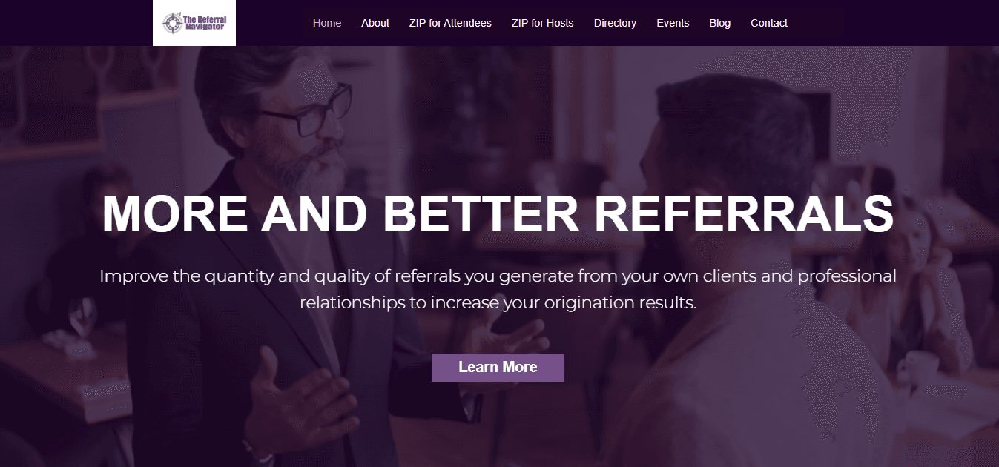
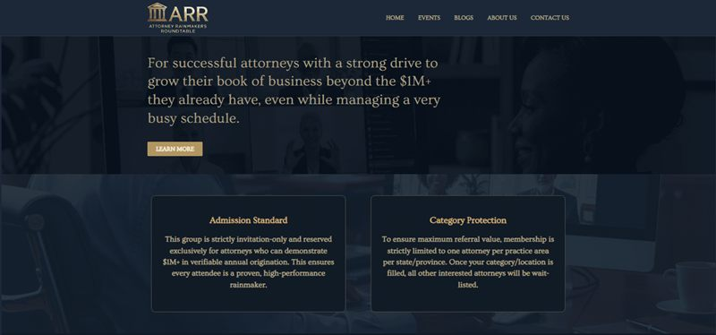
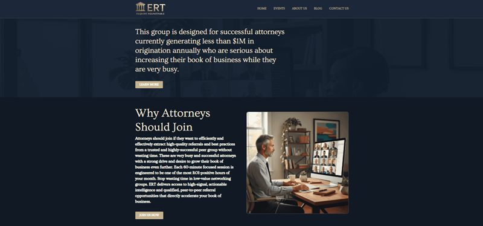
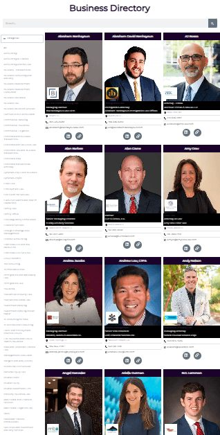
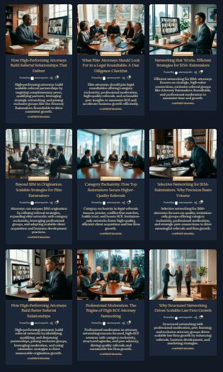
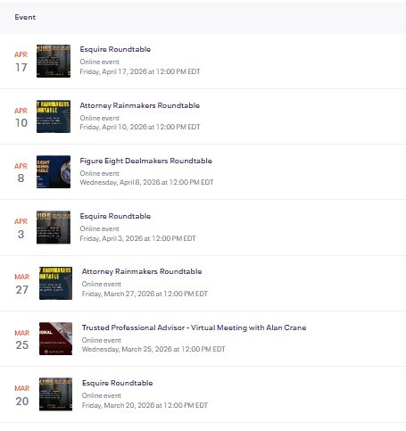
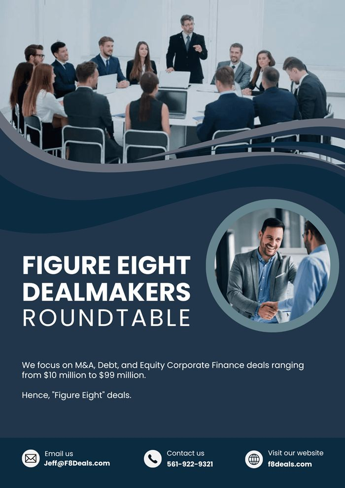

The Referral Navigator · 2023–2024 · Web & events
Websites and event operations for a referral network
The Referral Navigator helps attorneys and other professionals build referral relationships, partly through regular online roundtables. As its marketing virtual assistant, I designed and built websites, added a member directory and a blog page, and set up the events that kept the roundtables running.
- My part
- Web design and page building, directory and blog pages, newsletter batches, Eventbrite events, event layouts, LinkedIn outreach
- Role
- Marketing Virtual Assistant

Context
The network needed a clear public home, plus separate sites for roundtables aimed at specific groups of attorneys. Members also needed to be findable, and the roundtables needed a steady routine of events and reminders.
Websites
I designed and built the main Referral Navigator site and sites for the Attorney Rainmakers Roundtable and the Esquire Roundtable. The two roundtable sites use the same dark navy layout, and each explains who that roundtable is for.




Directory and blog
I added a business directory, where members appear with a photo, name, firm, and contact links, and a blog page with a consistent card layout for each post.




These are the only captures available of the directory and blog, so they are shown at their original size.
Roundtable events
The roundtables meet online. I set up the events in Eventbrite, scheduled the batches of reminder emails for each one, and created LinkedIn events and outreach to fill them. I also designed event and member layouts, like the flyer below.




Deliverables
- Three websites: TheReferralNavigator.com, AttorneyRainmakersRoundtable.com, EsquireRoundtable.com
- Business directory and blog page
- Batches of newsletter emails
- Eventbrite events with scheduled email reminders; LinkedIn events and outreach
- Event, sponsor, and member layouts
A members layout with personal contact details is not shown here, for privacy.